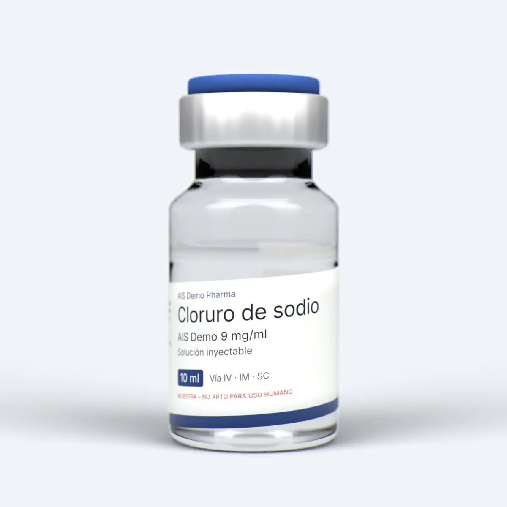
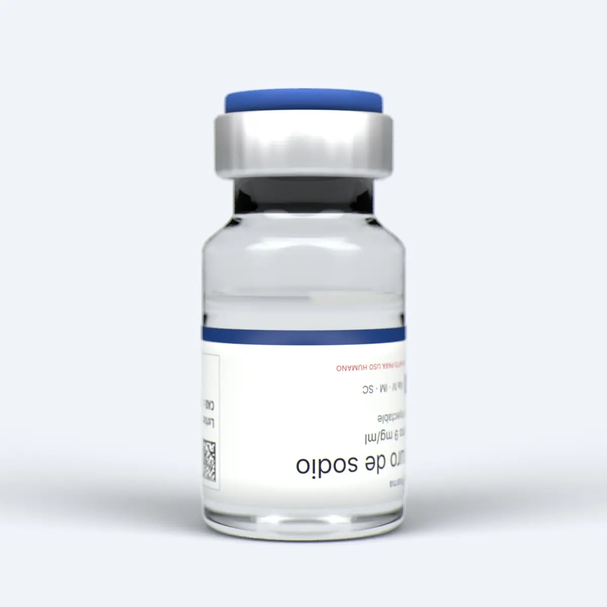
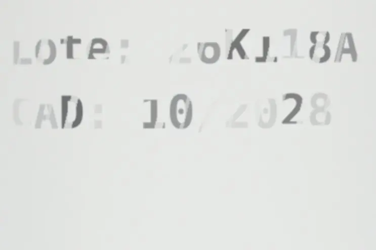
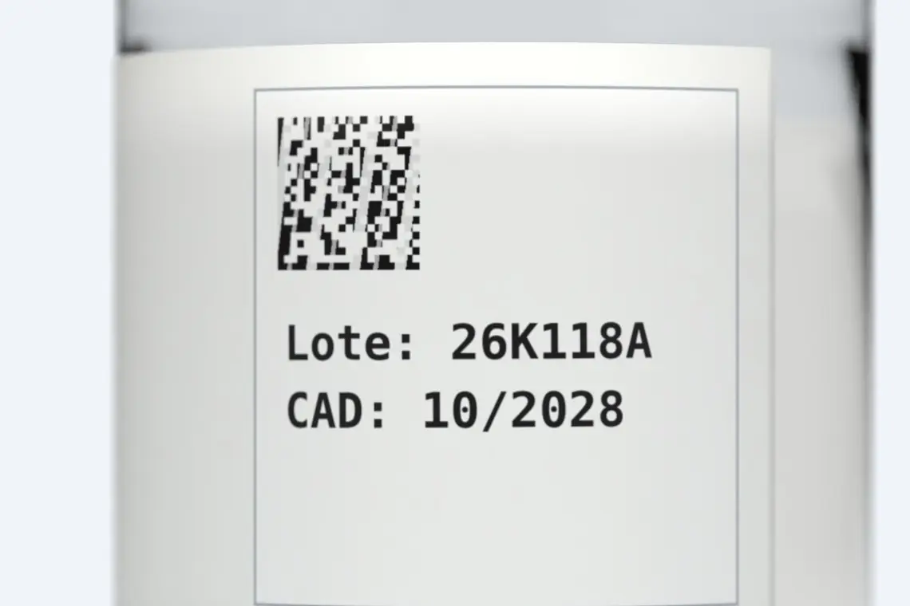

Cada etiqueta, en todo su perímetro
La visión en color revisa la presencia, la orientación y el contenido de las etiquetas, incluidos los marcajes de trazabilidad: detecta marcajes incompletos o ilegibles, y lee y comprueba el código de cada vial.
Etiqueta ausente o incorrecta

Etiqueta desalineada

Orientación incorrecta

Lectura de lote y caducidad

Data Matrix y código de barras
- Lectura del número de serie
- Contenido regulatorio de la etiqueta